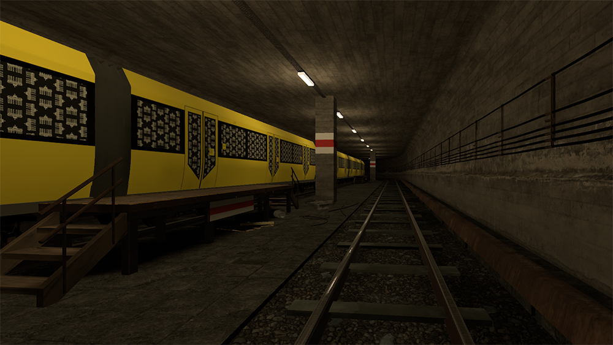
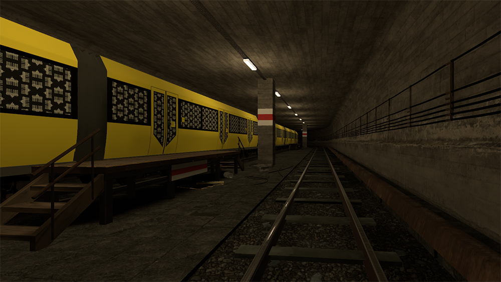

Kingspray VR ist ein Streetart und Graffiti Simulator in Virtual Reality, welcher es erlaubt eigene Maps in Unity zu erstellen und in nutzererstellten Umgebungen zu malen.
Ich erstelle immer wieder Maps für den Simulator und orientiere mich bei der Entwicklung der Umgebungen meist an realen Orten. Alle 3D Objekte in den hier gezeigten Maps sind von mir modelliert und für die Verwendung in VR optimiert.
 
